The DRS system is a tool that taps into all other systems to allow the developer to nest complex dialogue and story within their games in an interface that consolidates all the connected data. You can pass events externally, or even nest the dialogue directly inside of the DRS tool itself, and see the execution order of your events in real-time.
The Dynamic Response System is explained in the written tutorial below, and also in the video master class embedded here. It covers how to execute various events through dialog and overall gameplay.
Overview
In this tutorial, you will learn to set up a simple scenario and to use the basic Dynamic Response System (DRS) functions.
We are going to set up a small scene where a Non-Player Character (NPC) comments on the action of a player triggered by pressing a key on the keyboard. This will send a DRS signal via a simple Flow Graph script.
We will add a Response to a signal in the DRS widget and then add a SpeakLine action to this Response so that we can actually get a dialog feedback. After completing these steps, you will iterate on the scenario by adding a Condition to the Response and debugging your data.
Please note that in this section, the GameSDK Sample Project is used. The assets in this Tutorial can be accessed only if it is downloaded. Please visit the Asset Database to download the GameSDK project.
Step 1: Sending a DRS Signal From Flow Graph
- Create an empty level by selecting File → New, and name it, for instance, DRS_tutorial.
- Next, add an NPC by selecting Legacy Entity → AI → Characters → Human on the Create Object tool.
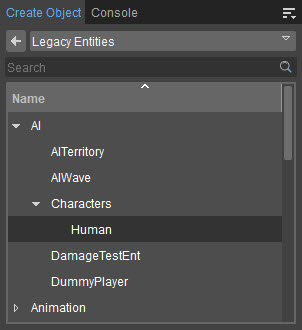
- To avoid the Character shooting at you, change the Faction Setting to Civilians on the Properties panel.
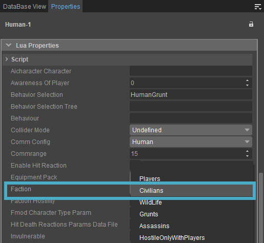
- Create a new Flow Graph for this entity by right-clicking on it and selecting Create Flow Graph.
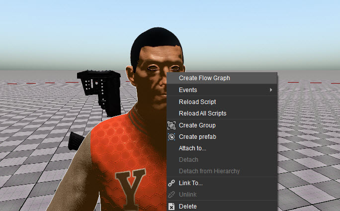
- Name the Flow Graph; e.g. DRS.
As a starting point for your Flow Graph logic, add a Debug:InputKey node by right-clicking an empty space and choosing Add Node → Debug → InputKey, or by pressing Q and typing its name.
This node creates an output when you press a specific key on the keyboard or a button on the Controller. - Assign a key or button to the node; e.g. g.
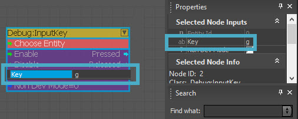
- Add a DynamicResponse:SendSignal node to the Flow Graph which will be used to send a signal.
- Set previously added NPC by right-clicking the Choose Entity field and selecting Assign SelectedEntity; alternatively, you can choose Assign Graph Entity without selecting the entity itself as the current graph is already attached to the NPC entity.
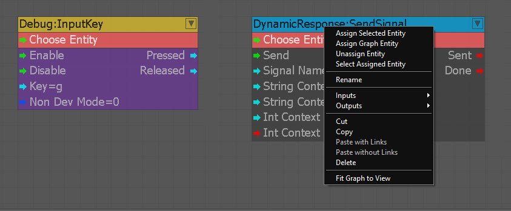
- Define a specific name for the signal by typing it in the Signal Name field; e.g. sg_button_pressed.
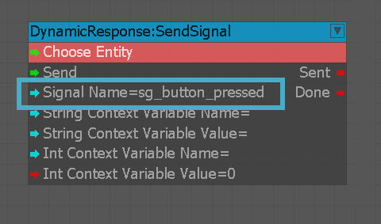
- To complete the setup, connect the Pressed output of the Debug:InputKey node to the Send input of the DynamicRespone:SendSignal node.
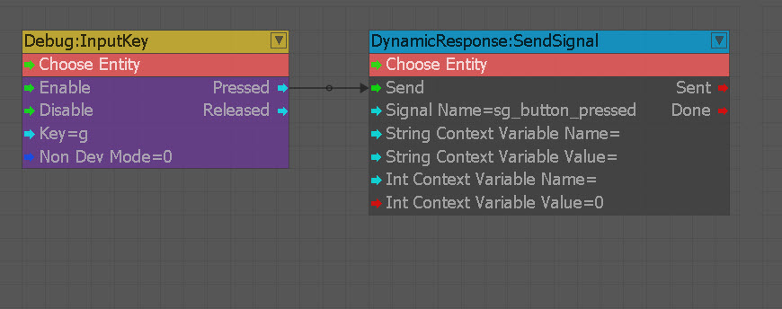
After this step, whenever the designated key (g) is pressed, a signal will be sent to the NPC. However, you won’t get any response from the entity since no Response has been linked to the signal yet.
For linking a Response to a signal, please go through the next step.
Step 2: Creating a Response
You can create a new Response by executing either one of the following methods:
- Create a new Response and manually specify the signal that it should be linked to.
This approach is useful when you are prototyping Responses for signals which are not actually in the game yet. - Check the list of signals that are recently sent by the game, then add a new Response to one of these signals.
This approach is usually the preferred method as the game sends the variables and signals to the DRS, letting the narrative designers to pick these up to create Responses easily.
Initial Steps
The DRS tool combines multiple functionalities, such as:
- Displaying the current state of DRS variables.
- Displaying all available dialog lines.
- Displaying Debug functionality.
The DRS workflow requires the user to utilize different options on the main tabs of the tool to modify the various aspects of a dialog flow.
The Responses tab should be used to create Responses to a given signal.
The Responses panel can be accessed by clicking the respective tab on the bottom-left corner of the panel: 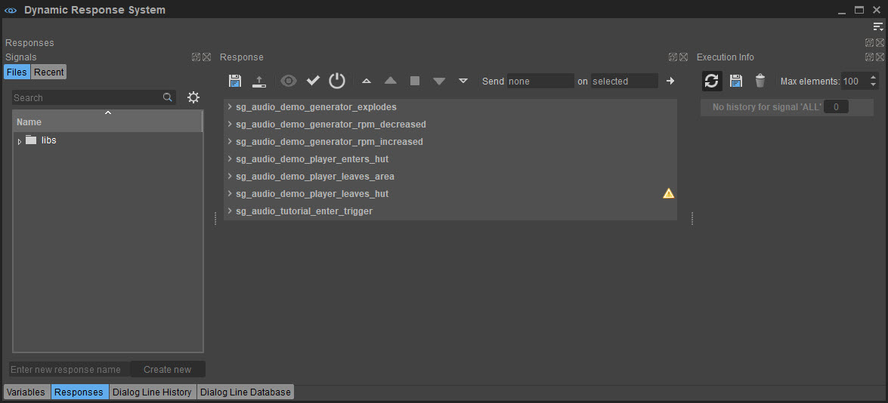
You can view the recent signals by selecting the Recent button on the top-left corner of the Signals panel. It reveals the list of all signals sent by the game so far. 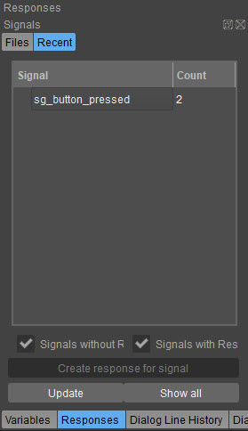
The association between a signal and a Response is done only through the filename, meaning a Response that is saved in the file sg_button_pressed.response is linked to the signal sg_button_pressed. Renaming the file would associate it with another signal.
New Responses will be saved in YOUR_PROJECT_FOLDER\Assets\libs\DynamicResponseSystem\Responses. If it's not available already, you need to create a project folder to save your responses. Within this folder, you can create sub-folders and move your .response files into them to keep the responses sorted. Make sure you do not end up with multiple response files for the same signal name.
Creating a Response
Click on the signal that you want to create a respond for; in our test-scenario, this would be sg_button_pressed. Then click on the Create response for signal button. This will create a new Response which is associated with this signal.
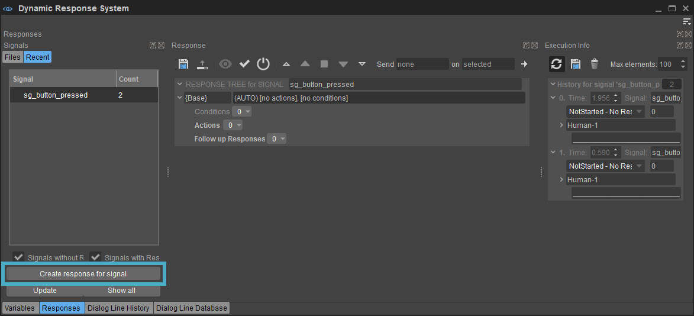
Alternatively, you can create a new Response file in the Files tab by typing its name into the name field and clicking the Create new button next to it.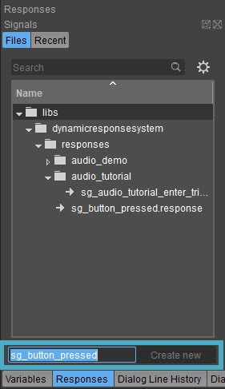
Switch to the Files tab to see the newly created Response file sg_button_pressed.response. Don't forget to save the file by right clicking the Response and clicking Save.
In order for a Response to be deleted, it must be saved first.
With the current setup, the Response should have already been executed for each time the sg_button_pressed signal is sent by the game. But the response currently does nothing, so you won’t be able to notice it. Executing a response usually comprises of three functions that are outlined below:
- Checking all the Conditions (If there are any assigned to the response).
- Executing all Actions (Only if the Conditions were met and if there are any Actions assigned to the Response).
- Executing the best follow-up Response (if there is one, when all the Actions are completed).
For adding an Action to a Response, please continue to the following step.
Step 3: Adding an Action to a Response
This step explains the process of adding an Action to a DRS Response.
- You can add an Action by selecting Add from the Actions dropdown list. By default, this will create a SpeakLine action with li_sg_button_pressed written in the Line field. This indicates that it is a line associated with the sg_button_pressed signal.
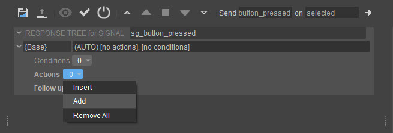
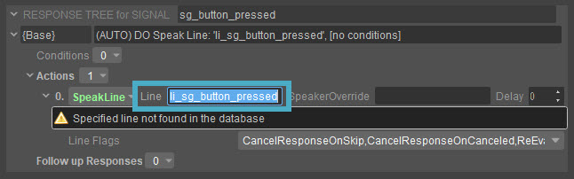
- After you add the Response to the signal, you can also edit the text that you want to display by editing the Line field under Actions menu.
The SpeakLine action has the following properties:
Line: Specifies the LineId that should be spoken. Usually this refers to a line from the dialog line database; but for now, leave the text as it is or simply type the text that you want to display.
SpeakOverride: Specifies the actor who should say this line. If you don't specify anything here, it will be the current actor; which, in this case, is the entity that was attached to the Flow Graph script. - Now, in game mode, you can test the setup by pressing the specified key (g):
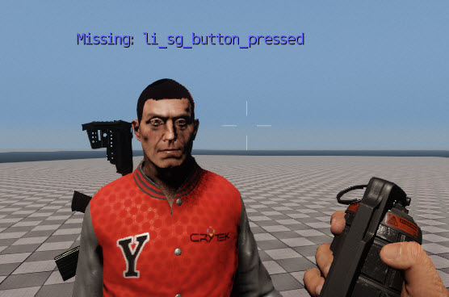
Now that an Action is assigned to the Response, you can add a Condition as mentioned in the next step.
Step 4: Adding a Condition to a Response
In this step, you will learn about adding a Condition to a Response and modifying it.
- First, add a Condition to a Response by choosing either Insert or Add from the Conditions menu;
For example, the Random condition can be used to define the execution frequency by setting the Probability value: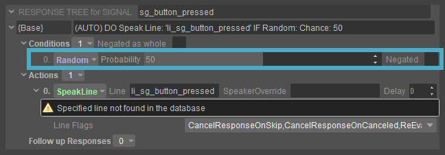
This property defines the chances of the condition to be met. When you set this value to 50, the condition will only be met half the time, which results in the SpeakLine action to be called with a 50% chance when the specified key is pressed and the signal has been sent. This is a good example to demonstrate how conditions influence the outcome of a Response. - When you press g to send the signal a couple of times, the signal history should look as follows:
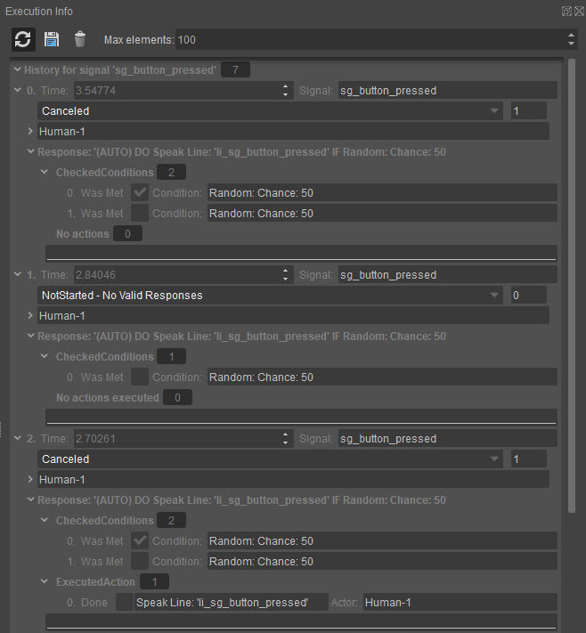
As you can see in the image, the SpeakLine action was only executed the second time the Response was triggered. This is because when the assigned key was pressed for the first time, the Random condition was not met due to the 50 Probability value.
After adding a Condition and an Action to the Response, you can now follow the steps explained in the next section to learn how to add a dialog line to the Response.
Step 5: Adding a Dialog Line
This tutorial explains how to add a dialog line to the Dialog Line database.
As mentioned in Step 3, a warning appears when the assigned key is pressed. This is because the line that you are referring to in the SpeakLine action is not available in the Dialog Line Database yet. Instead of specifying all properties that are needed for the text line in the SpeakLine action, you can just use the line ID in the Dialog Line Database. The database then holds all information for that line such as subtitles, audio assets, and animations. This is particularly helpful when grouping the actual data together, instead of splitting it into several Actions. It also helps later on with localization.
- In order to add a new line to the database, you need to select the Dialog Line Database tab in the Dynamic Response System widget and right-click on the empty space and select Insert Line to create a new line. The ID of the new line needs to be the same as the one that you indicated in the SpeakLine action and it needs to be a unique line; e.g. li_my_test_line.
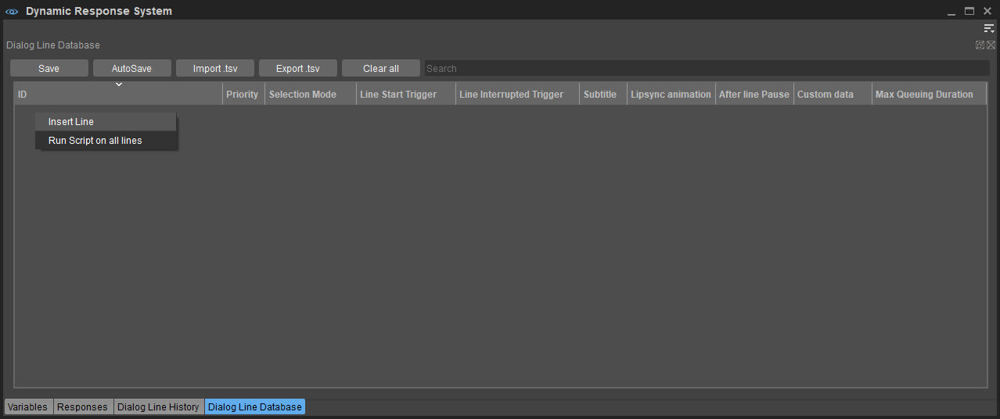
A single line can have multiple variations, which means even if you execute the same SpeakLine action twice, the actual line that is spoken can be different. This is a fast way to add variations on a line. For example, you can simply add three variations, by right-clicking the line and selecting the Add line variation option. Note that the first variation is already stored within line, so you need to add two more.
There are different properties that you can define for each line. For now, just add the text you want to display in the column Subtitle.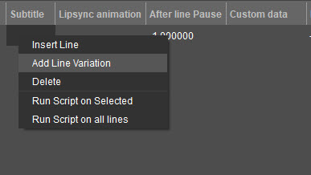
You can archive the same result by splitting the different variations into different lines, and do the randomization on the Response.Before you can test your new setup, double check if the SpeakLine action in the Response is actually linked to the newly created line.
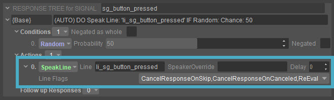
- If you now test the setup in the game, you should get an output as follows:
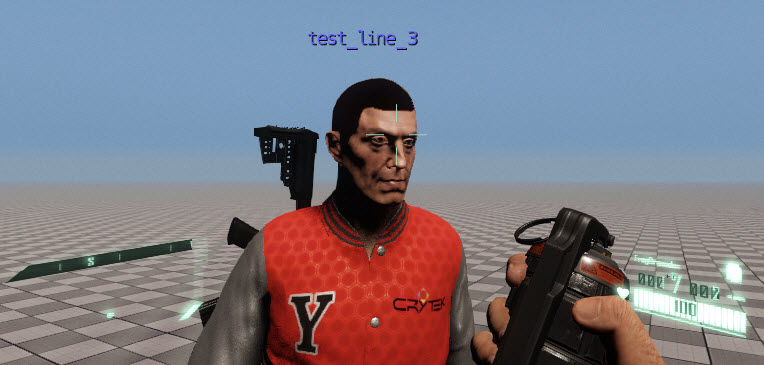
Since the variation is picked at random, you might see a different line. - You can now start playing around with these tools. You can add a talk animation to your lines or add an audio trigger, provided that these files are available in the current project:
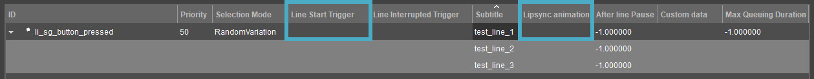